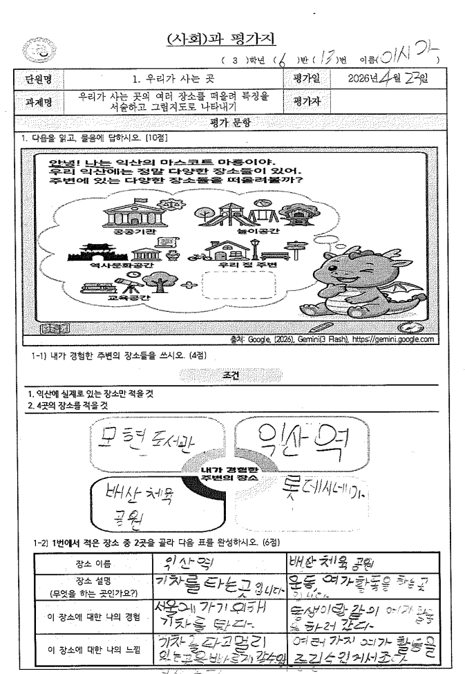

1 / 2

2 / 2

총점
- / 50
점
(A)
채점 결과
채점기준
장소 인식 및 특징 파악 능력
공간 구성 및 시각화 표현력
고장에 대한 가치 인식 및 태도
AI Assistant의 채점 결과는 언제나 부정확할 수 있습니다. 선생님의 최종 확인이 필요합니다.
AI 피드백
루브릭 기반 AI 피드백
과제물 기반 피드백 외에 채점기준 기반의 추가 피드백을 만들 수 있어요.
선생님 한마디